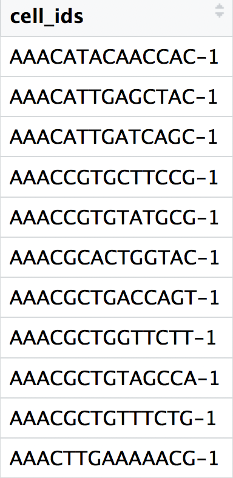
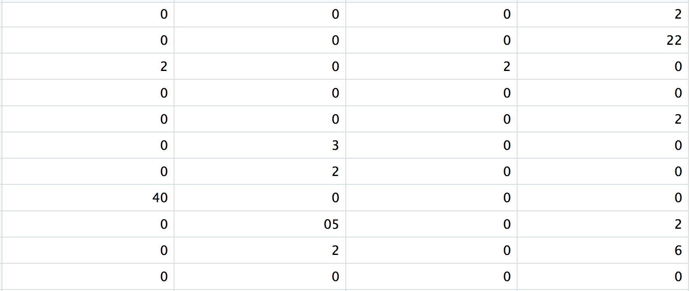

After quantifying gene expression we need to bring this data into R to generate metrics for performing QC. In this lesson we will talk about the format(s) count data can be expected in, and how to read it into R so we can move on to the QC step in the workflow. We will also discuss the dataset we will be using and the associated metadata.
1 Exploring the example dataset
For this workshop we will be working with a single-cell RNA-seq dataset which is part of a larger study from (Kang et al. 2017). In this paper, the authors present a computational algorithm that harnesses genetic variation (eQTL) to determine the genetic identity of each droplet containing a single cell (singlet) and identify droplets containing two cells from different individuals (doublets).
The data used to test their algorithm is comprised of pooled Peripheral Blood Mononuclear Cells (PBMCs) taken from eight lupus patients, split into control and interferon beta-treated (stimulated) conditions.
This dataset is available on GEO (GSE96583), however the available counts matrix lacked mitochondrial reads, so we downloaded the BAM files from the SRA (SRP102802). These BAM files were converted back to FASTQ files, then run through Cell Ranger to obtain the count data that we will be using.
NOTE: The count data for this dataset is also freely available from 10X Genomics and is used in the Seurat tutorial.
1.2 Metadata
In addition to the raw data, we also need to collect information about the data; this is known as metadata. There is often a temptation to just start exploring the data, but it is not very meaningful if we know nothing about the samples that this data originated from.
Some relevant metadata for our dataset is provided below:
The libraries were prepared using 10X Genomics version 2 chemistry
The samples were sequenced on the Illumina NextSeq 500
PBMC samples from eight individual lupus patients were separated into two aliquots each.
One aliquot of PBMCs was activated by 100 U/mL of recombinant IFN-β for 6 hours.
The second aliquot was left untreated.
After 6 hours, the eight samples for each condition were pooled together in two final pools (stimulated cells and control cells). We will be working with these two, pooled samples. (We did not demultiplex the samples because SNP genotype information was used to demultiplex in the paper and the barcodes/sample IDs were not readily available for this data. Generally, you would demultiplex and perform QC on each individual sample rather than pooling the samples.)
12,138 and 12,167 cells were identified (after removing doublets) for control and stimulated pooled samples, respectively.
Since the samples are PBMCs, we will expect immune cells, such as:
B cells
T cells
NK cells
monocytes
macrophages
possibly megakaryocytes
It is recommended that you have some expectation regarding the cell types you expect to see in a dataset prior to performing the QC. This will inform you if you have any cell types with low complexity (lots of transcripts from a few genes) or cells with higher levels of mitochondrial expression. This will enable us to account for these biological factors during the analysis workflow.
None of the above cell types are expected to be low complexity or anticipated to have high mitochondrial content.
2 Loading single-cell RNA-seq count data
After processing 10X data using its proprietary software Cell Ranger, you will have an outs directory (always). Within this directory you will find a number of different files including the files listed below:
web_summary.html: report that explores different QC metrics, including the mapping metrics, filtering thresholds, estimated number of cells after filtering, and information on the number of reads and genes per cell after filtering.
BAM alignment files: files used for visualization of the mapped reads and for re-creation of FASTQ files, if needed
filtered_feature_bc_matrix: folder containing all files needed to construct the count matrix using data filteredby Cell Ranger
raw_feature_bc_matrix: folder containing all files needed to construct the count matrix using the raw unfiltered data
While Cell Ranger performs filtering on the expression counts (see note below), we wish to perform our own QC and filtering because we want to account for the biology of our experiment/biological system. Given this we are only interested in the raw_feature_bc_matrix folder in the Cell Ranger output.
Why do we not use the filtered_feature_bc_matrix folder?
The filtering performed by Cell Ranger when generating the filtered_feature_bc_matrix is often good; however, sometimes data can be of very high quality and the Cell Ranger filtering process can remove high quality cells. In addition, it is generally preferable to explore your own data while taking into account the biology of the experiment for applying thresholds during filtering. For example, if you expect a particular cell type in your dataset to be smaller and/or not as transcriptionally active as other cell types in your dataset, these cells have the potential to be filtered out. However, with Cell Ranger v3 they have tried to account for cells of different sizes (for example, tumor vs infiltrating lymphocytes), and now may not filter as many low quality cells as needed.
Regardless of the technology or pipeline used to process your raw single-cell RNA-seq sequence data, the output with quantified expression will generally be the same. That is, for each individual sample you will have the following three files:
a file with the cell IDs, representing all cells quantified
a file with the gene IDs, representing all genes quantified
This is a text file which contains all cellular barcodes present for that sample. Barcodes are listed in the order of data presented in the matrix file (i.e. these are the column names).

2. features.tsv
This is a text file which contains the identifiers of the quantified genes. The source of the identifier can vary depending on what reference (i.e. Ensembl, NCBI, UCSC) you use in the quantification methods, but most often these are official gene symbols. The order of these genes corresponds to the order of the rows in the matrix file (i.e. these are the row names).
3. matrix.mtx
This is a text file which contains a matrix of count values. The rows are associated with the gene IDs above and columns correspond to the cellular barcodes. Note that there are many zero values in this matrix.

Loading this data into R requires us to use functions that allow us to efficiently combine these three files into a single count matrix. However, instead of creating a regular matrix data structure, the functions we will use create a sparse matrix to reduce the amount of memory (RAM), processing capacity (CPU) and storage required to work with our huge count matrix.
Different methods for reading in data include:
readMM(): This function is from the Matrix package and will convert our standard matrix into a sparse matrix. The features.tsv file and barcodes.tsv must first be individually loaded into R and then they can be combined. For specific code and instructions on how to do this please see these additional material.
Read10X(): This function is from the Seurat package and will use the Cell Ranger output directory as input, directly. With this method individual files do not need to be loaded in, instead the function will load and combine them into a sparse matrix. We will be using this function to load in our data!
2.1 首先尝试读取单个样本
If we had a single sample, we could generate the count matrix and then subsequently create a Seurat object:
library(Seurat)# Read in 10X data for a single sample (output is a sparse matrix)ctrl_counts<-Read10X(data.dir ="data/scRNA-seq_online/original_10x/ctrl_raw_feature_bc_matrix")# Turn count matrix into a Seurat object (output is a Seurat object)ctrl<-CreateSeuratObject(counts =ctrl_counts, project ="pbmc_ctrl", min.features =100)ctrl
An object of class Seurat
33538 features across 15688 samples within 1 assay
Active assay: RNA (33538 features, 0 variable features)
1 layer present: counts
Note
The min.features argument specifies the minimum number of genes that need to be detected per cell. This argument will filter out poor quality cells that likely just have random barcodes encapsulated without any cell present. Usually, cells with less than 100 genes detected are not considered for analysis.
Seurat automatically creates some metadata for each of the cells when you use the Read10X() function to read in data. This information is stored in the meta.data slot within the Seurat object.
An object of class Seurat
33538 features across 31444 samples within 1 assay
Active assay: RNA (33538 features, 0 variable features)
1 layer present: counts
# Check that the merged object has the appropriate sample-specific prefixeshead(merged_seurat)
colnames(merged_seurat)<-gsub(pattern ="^1_", x =colnames(merged_seurat), replacement ="ctrl_")colnames(merged_seurat)<-gsub(pattern ="^2_", x =colnames(merged_seurat), replacement ="stim_")# Re-check that the merged object has the appropriate sample-specific prefixeshead(merged_seurat)
---title: "数据导入与Seurat对象构建"---{width="580"}After quantifying gene expression we need to bring this data into R to generate metrics for performing QC. In this lesson we will talk about the format(s) count data can be expected in, and how to read it into R so we can move on to the QC step in the workflow. We will also discuss the dataset we will be using and the associated metadata.------------------------------------------------------------------------# Exploring the example datasetFor this workshop we will be working with a single-cell RNA-seq dataset which is part of a larger study from [@kang2017]. In this paper, the authors present a computational algorithm that harnesses genetic variation (eQTL) to determine the genetic identity of each droplet containing a single cell (singlet) and identify droplets containing two cells from different individuals (doublets).The data used to test their algorithm is comprised of pooled Peripheral Blood Mononuclear Cells (PBMCs) taken from eight lupus patients, split into **control** and **interferon beta-treated (stimulated)** conditions.> Image credit: [@kang2017]## Raw dataThis dataset is available on GEO ([GSE96583](https://www.ncbi.nlm.nih.gov/geo/query/acc.cgi?acc=GSE96583)), however the available counts matrix lacked mitochondrial reads, so we downloaded the BAM files from the SRA ([SRP102802](https://www-ncbi-nlm-nih-gov.ezp-prod1.hul.harvard.edu/sra?term=SRP102802)). These BAM files were converted back to FASTQ files, then run through [Cell Ranger](https://support.10xgenomics.com/single-cell-gene-expression/software/pipelines/latest/what-is-cell-ranger) to obtain the count data that we will be using.> **NOTE:** The count data for this dataset is also freely available from 10X Genomics and is used in the [Seurat tutorial](https://satijalab.org/seurat/v3.0/immune_alignment.html).## MetadataIn addition to the raw data, we also need to collect **information about the data**; this is known as **metadata**. There is often a temptation to just start exploring the data, but it is not very meaningful if we know nothing about the samples that this data originated from.Some relevant metadata for our dataset is provided below:- The libraries were prepared using 10X Genomics version 2 chemistry- The samples were sequenced on the Illumina NextSeq 500- PBMC samples from **eight** individual lupus patients were separated into two aliquots each. - One aliquot of PBMCs was activated by 100 U/mL of **recombinant IFN-β for 6 hours**. - The second aliquot was left **untreated**. - After 6 hours, the eight samples for each condition were pooled together in two final pools (stimulated cells and control cells). We will be working with these two, pooled samples. (*We did not demultiplex the samples because SNP genotype information was used to demultiplex in the paper and the barcodes/sample IDs were not readily available for this data. Generally, you would demultiplex and perform QC on each individual sample rather than pooling the samples.*)- 12,138 and 12,167 cells were identified (after removing doublets) for control and stimulated **pooled** samples, respectively.- Since the samples are PBMCs, we will expect immune cells, such as: - B cells - T cells - NK cells - monocytes - macrophages - possibly megakaryocytes**It is recommended that you have some expectation regarding the cell types you expect to see in a dataset prior to performing the QC.** This will inform you if you have any cell types with low complexity (lots of transcripts from a few genes) or cells with higher levels of mitochondrial expression. This will enable us to account for these biological factors during the analysis workflow.None of the above cell types are expected to be low complexity or anticipated to have high mitochondrial content.# Loading single-cell RNA-seq count dataAfter processing 10X data using its proprietary software Cell Ranger, you will have an `outs` directory (always). Within this directory you will find a number of different files including the files listed below:- **`web_summary.html`:** report that explores different QC metrics, including the mapping metrics, filtering thresholds, estimated number of cells after filtering, and information on the number of reads and genes per cell after filtering.- `BAM alignment files`: files used for visualization of the mapped reads and for re-creation of FASTQ files, if needed- **`filtered_feature_bc_matrix`:** folder containing all files needed to construct the count matrix using data **filtered** **by Cell Ranger**- **`raw_feature_bc_matrix`:** folder containing all files needed to construct the count matrix using the raw **unfiltered data**While Cell Ranger performs filtering on the expression counts (see note below), we wish to perform our own QC and filtering because we want to account for the biology of our experiment/biological system. Given this **we are only interested in the `raw_feature_bc_matrix` folder** in the Cell Ranger output.::: {.callout-tip collapse="true"}###### Why do we not use the filtered_feature_bc_matrix folder?The `filtered_feature_bc_matrix` uses [internal filtering criteria by Cell Ranger](https://support.10xgenomics.com/single-cell-gene-expression/software/pipelines/latest/algorithms/overview), and we do not have control of what cells to keep or abandon.The filtering performed by Cell Ranger when generating the `filtered_feature_bc_matrix` is often good; however, sometimes data can be of very high quality and the **Cell Ranger filtering process can remove high quality cells**. In addition, it is generally preferable to explore your own data while taking into account the biology of the experiment for applying thresholds during filtering. For example, if you expect a particular cell type in your dataset to be smaller and/or not as transcriptionally active as other cell types in your dataset, these cells have the potential to be filtered out. However, with Cell Ranger v3 they have tried to account for cells of different sizes (for example, tumor vs infiltrating lymphocytes), and now may not filter as many low quality cells as needed.:::Regardless of the technology or pipeline used to process your raw single-cell RNA-seq sequence data, the output with quantified expression will generally be the same. That is, for each individual sample you will have the following **three files**:1. a file with the **cell IDs**, representing all cells quantified2. a file with the **gene IDs**, representing all genes quantified3. a **matrix of counts** per gene for every cell案例文件以`10X`格式数据储存。总文件夹为“original_10x”，其中每个样本有一个单独的文件夹，分别是“ctrl_raw_feature_bc_matrix”和“stim_raw_feature_bc_matrix”，每个样本文件夹由以下三个标准的`10X`文件组成：{width="344"}**1. `barcodes.tsv`**This is a text file which contains all cellular barcodes present for that sample. Barcodes are listed in the order of data presented in the matrix file (i.e. these are the column names).{width="153"}**2. `features.tsv`**This is a text file which contains the identifiers of the quantified genes. The source of the identifier can vary depending on what reference (i.e. Ensembl, NCBI, UCSC) you use in the quantification methods, but most often these are **official gene symbols**. The order of these genes corresponds to the order of the rows in the matrix file (i.e. these are the row names).{width="313"}**3. `matrix.mtx`**This is a text file which contains a matrix of count values. The **rows** are associated with the **gene IDs** above and **columns** correspond to the cellular **barcodes**. Note that there are **many zero values** in this matrix.{width="602"}Loading this data into R requires us to **use functions that allow us to efficiently combine these three files into a single count matrix.** However, instead of creating a regular matrix data structure, the functions we will use create a **sparse matrix** to reduce the amount of memory (RAM), processing capacity (CPU) and storage required to work with our huge count matrix.Different methods for reading in data include:1. **`readMM()`**: This function is from the `Matrix` package and will convert our standard matrix into a sparse matrix. The `features.tsv` file and `barcodes.tsv` must first be individually loaded into R and then they can be combined. For specific code and instructions on how to do this please see [these additional material](https://github.com/hbctraining/scRNA-seq_online/blob/master/lessons/readMM_loadData.md).2. **`Read10X()`**: This function is from the `Seurat` package and will use the Cell Ranger output directory as input, directly. With this method individual files do not need to be loaded in, instead the function will load and combine them into a sparse matrix. We will be using this function to load in our data!## 首先尝试读取单个样本If we had a single sample, we could generate the count matrix and then subsequently create a Seurat object:```{r}library(Seurat)# Read in 10X data for a single sample (output is a sparse matrix)ctrl_counts <-Read10X(data.dir ="data/scRNA-seq_online/original_10x/ctrl_raw_feature_bc_matrix")# Turn count matrix into a Seurat object (output is a Seurat object)ctrl <-CreateSeuratObject(counts = ctrl_counts,project ="pbmc_ctrl",min.features =100)ctrl```::: callout-noteThe `min.features` argument specifies the minimum number of genes that need to be detected per cell. This argument will filter out poor quality cells that likely just have random barcodes encapsulated without any cell present. **Usually, cells with less than 100 genes detected are not considered for analysis**.:::**Seurat automatically creates some metadata** for each of the cells when you use the `Read10X()` function to read in data. This information is stored in the `meta.data` slot within the Seurat object.```{r}# Explore the metadatahead(ctrl@meta.data)```What do the columns of metadata mean?- `orig.ident`: this often contains the sample identity if known。通过`CreateSeuratObject`中的`project`参数可以指定，默认是"SeuratProject"- `nCount_RNA`: number of **UMIs** per cell- `nFeature_RNA`: number of **genes** detected per cell## 读取所有样本1. 首先通过`list.dirs()`函数列出数据文件夹“original_10x”下所有子文件夹的相对路径，并形成一个包含了所有子文件夹相对路径的字符向量“files”2. 然后通过`Read10X()`读取每个子文件夹。`Read10X`函数支持批量读取多个文件夹。3. 最后，通过`CreateSeuratObject`构建Seurat对象。::: callout-caution这里利用了`Read10X`函数支持批量读取多个文件夹的特性，直接创建一个合并后的Seurat对象“merged_seurat”。但是，这只适用于读取以标准10X格式保存的数据，即**每个样本为一个文件夹**，每个文件夹内有三个文件，文件名为：**“barcodes.tsv.gz”、"features.tsv.gz"、"matrix.mtx.gz"。**另外一种更通用的方法是通过循环依次读取每个文件夹内的3个10X文件，得到一个Seurat对象列表，然后通过`merge()`函数合并这些Seurat对象，详见：[读取非标准10X格式文件](/single_cell/sc_supplementary/read_sc_data.qmd#Read_non-standard_10x_files)。:::```{r}# 列出数据文件夹下所有子文件夹的相对路径list.dirs("data/scRNA-seq_online/original_10x")files <-list.dirs("data/scRNA-seq_online/original_10x")[-1]# 构建Seurat对象merged_seurat <-CreateSeuratObject(Read10X(files),min.features =100, project ="GSE96583")merged_seurat# Check that the merged object has the appropriate sample-specific prefixeshead(merged_seurat)tail(merged_seurat)```可以发现，此时的细胞barcode按照我们读取10X文件的顺序，被分别赋予“1, 2, 3...”的前缀。为了后续便于识别细胞来自哪个样本，我们需要通过`gsub()`将这些前缀更改为样本名称（"ctrl" 和 “stim”）。```{r}colnames(merged_seurat) <-gsub(pattern ="^1_", x =colnames(merged_seurat), replacement ="ctrl_")colnames(merged_seurat) <-gsub(pattern ="^2_", x =colnames(merged_seurat), replacement ="stim_")# Re-check that the merged object has the appropriate sample-specific prefixeshead(merged_seurat)tail(merged_seurat)```现在可以看到细胞barcode的前缀已被更改成了样本名称。接下来我们还可以进一步将样本信息添加到meta.data的新的一列“sample”中:```{r}# Create sample columnlibrary(stringr)merged_seurat$sample <-str_split(rownames(merged_seurat@meta.data),"_",simplify =TRUE)head(merged_seurat)table(merged_seurat$sample)```# 保存Seurat对象```{r}# 保存saveRDS(merged_seurat, file ="output/scRNA-seq_online/merged_seurat.rds")```------------------------------------------------------------------------::: {.callout-note collapse="true" icon="false"}## Session Info```{r}#| echo: falsesessionInfo()```:::# References {.unnumbered}::: {#refs}:::